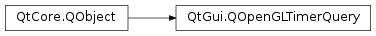

QOpenGLTimerQuery¶
Note
This class was introduced in Qt 5.1.
Synopsis¶
Functions¶
- def
begin() - def
create() - def
destroy() - def
end() - def
isCreated() - def
isResultAvailable() - def
objectId() - def
recordTimestamp() - def
waitForResult() - def
waitForTimestamp()
Detailed Description¶
The
PySide2.QtGui.QOpenGLTimerQueryclass wraps an OpenGL timer query object.OpenGL timer query objects are OpenGL managed resources to measure the execution times of sequences of OpenGL commands on the GPU.
OpenGL offers various levels of support for timer queries, depending on the version of OpenGL you have and the presence of the ARB_timer_query or EXT_timer_query extensions. The support can be summarized as:
- OpenGL >=3.3 offers full support for all timer query functionality.
- OpenGL 3.2 with the ARB_timer_query extension offers full support for all timer query functionality.
- OpenGL <=3.2 with the EXT_timer_query extension offers limited support in that the timestamp of the GPU cannot be queried. Places where this impacts functions provided by Qt classes will be highlighted in the function documentation.
- OpenGL ES 2 (and OpenGL ES 3) do not provide any support for OpenGL timer queries.
OpenGL represents time with a granularity of 1 nanosecond (1e-9 seconds). As a consequence of this, 32-bit integers would only give a total possible duration of approximately 4 seconds, which would not be difficult to exceed in poorly performing or lengthy operations. OpenGL therefore uses 64 bit integer types to represent times. A GLuint64 variable has enough width to contain a duration of hundreds of years, which is plenty for real-time rendering needs.
As with the other Qt OpenGL classes,
PySide2.QtGui.QOpenGLTimerQueryhas aPySide2.QtGui.QOpenGLTimerQuery.create()function to create the underlying OpenGL object. This is to allow the developer to ensure that there is a valid current OpenGL context at the time.Once created, timer queries can be issued in one of several ways. The simplest method is to delimit a block of commands with calls to
PySide2.QtGui.QOpenGLTimerQuery.begin()andPySide2.QtGui.QOpenGLTimerQuery.end(). This instructs OpenGL to measure the time taken from completing all commands issued prior toPySide2.QtGui.QOpenGLTimerQuery.begin()until the completion of all commands issued prior toPySide2.QtGui.QOpenGLTimerQuery.end().At the end of a frame we can retrieve the results by calling
PySide2.QtGui.QOpenGLTimerQuery.waitForResult(). As this function’s name implies, it blocks CPU execution until OpenGL notifies that the timer query result is available. To avoid blocking, you can check if the query result is available by callingPySide2.QtGui.QOpenGLTimerQuery.isResultAvailable(). Note that modern GPUs are deeply pipelined and query results may not become available for between 1-5 frames after they were issued.Note that OpenGL does not permit nesting or interleaving of multiple timer queries using
PySide2.QtGui.QOpenGLTimerQuery.begin()andPySide2.QtGui.QOpenGLTimerQuery.end(). Using multiple timer queries andPySide2.QtGui.QOpenGLTimerQuery.recordTimestamp()avoids this limitation. When usingPySide2.QtGui.QOpenGLTimerQuery.recordTimestamp()the result can be obtained at some later time usingPySide2.QtGui.QOpenGLTimerQuery.isResultAvailable()andPySide2.QtGui.QOpenGLTimerQuery.waitForResult(). Qt provides the convenience classPySide2.QtGui.QOpenGLTimeMonitorthat helps with using multiple query objects.See also
-
class
PySide2.QtGui.QOpenGLTimerQuery([parent=nullptr])¶ Parameters: parent – PySide2.QtCore.QObjectCreates a
PySide2.QtGui.QOpenGLTimerQueryinstance with the givenparent. You must callPySide2.QtGui.QOpenGLTimerQuery.create()with a valid OpenGL context before using.
-
PySide2.QtGui.QOpenGLTimerQuery.begin()¶ Marks the start point in the OpenGL command queue for a sequence of commands to be timed by this query object.
This is useful for simple use-cases. Usually it is better to use
PySide2.QtGui.QOpenGLTimerQuery.recordTimestamp().
-
PySide2.QtGui.QOpenGLTimerQuery.create()¶ Return type: PySide2.QtCore.boolCreates the underlying OpenGL timer query object. There must be a valid OpenGL context that supports query objects current for this function to succeed.
Returns
trueif the OpenGL timer query object was successfully created.
-
PySide2.QtGui.QOpenGLTimerQuery.destroy()¶ Destroys the underlying OpenGL timer query object. The context that was current when
PySide2.QtGui.QOpenGLTimerQuery.create()was called must be current when calling this function.
-
PySide2.QtGui.QOpenGLTimerQuery.end()¶ Marks the end point in the OpenGL command queue for a sequence of commands to be timed by this query object.
This is useful for simple use-cases. Usually it is better to use
PySide2.QtGui.QOpenGLTimerQuery.recordTimestamp().
-
PySide2.QtGui.QOpenGLTimerQuery.isCreated()¶ Return type: PySide2.QtCore.boolReturns
trueif the underlying OpenGL query object has been created. If this returnstrueand the associated OpenGL context is current, then you are able to issue queries with this object.
-
PySide2.QtGui.QOpenGLTimerQuery.isResultAvailable()¶ Return type: PySide2.QtCore.boolReturns
trueif the OpenGL timer query result is available.This function is non-blocking and ideally should be used to check for the availability of the query result before calling
PySide2.QtGui.QOpenGLTimerQuery.waitForResult().
-
PySide2.QtGui.QOpenGLTimerQuery.objectId()¶ Return type: PySide2.QtOpenGL.GLuintReturns the id of the underlying OpenGL query object.
-
PySide2.QtGui.QOpenGLTimerQuery.recordTimestamp()¶ Places a marker in the OpenGL command queue for the GPU to record the timestamp when this marker is reached by the GPU. This function is non-blocking and the result will become available at some later time.
The availability of the result can be checked with
PySide2.QtGui.QOpenGLTimerQuery.isResultAvailable(). The result can be fetched withPySide2.QtGui.QOpenGLTimerQuery.waitForResult()which will block if the result is not yet available.
-
PySide2.QtGui.QOpenGLTimerQuery.waitForResult()¶ Return type: long Returns the result of the OpenGL timer query.
This function will block until the result is made available by OpenGL. It is recommended to call
PySide2.QtGui.QOpenGLTimerQuery.isResultAvailable()to ensure that the result is available to avoid unnecessary blocking and stalling.
-
PySide2.QtGui.QOpenGLTimerQuery.waitForTimestamp()¶ Return type: long Returns the current timestamp of the GPU when all previously issued OpenGL commands have been received but not necessarily executed by the GPU.
This function blocks until the result is returned.
© 2018 The Qt Company Ltd. Documentation contributions included herein are the copyrights of their respective owners. The documentation provided herein is licensed under the terms of the GNU Free Documentation License version 1.3 as published by the Free Software Foundation. Qt and respective logos are trademarks of The Qt Company Ltd. in Finland and/or other countries worldwide. All other trademarks are property of their respective owners.